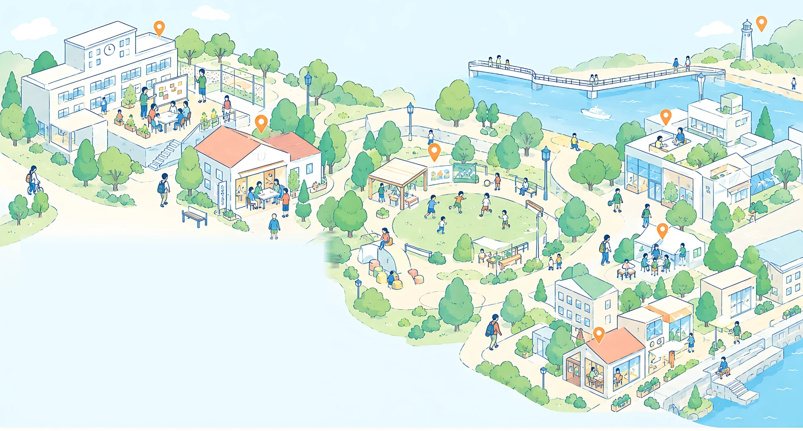
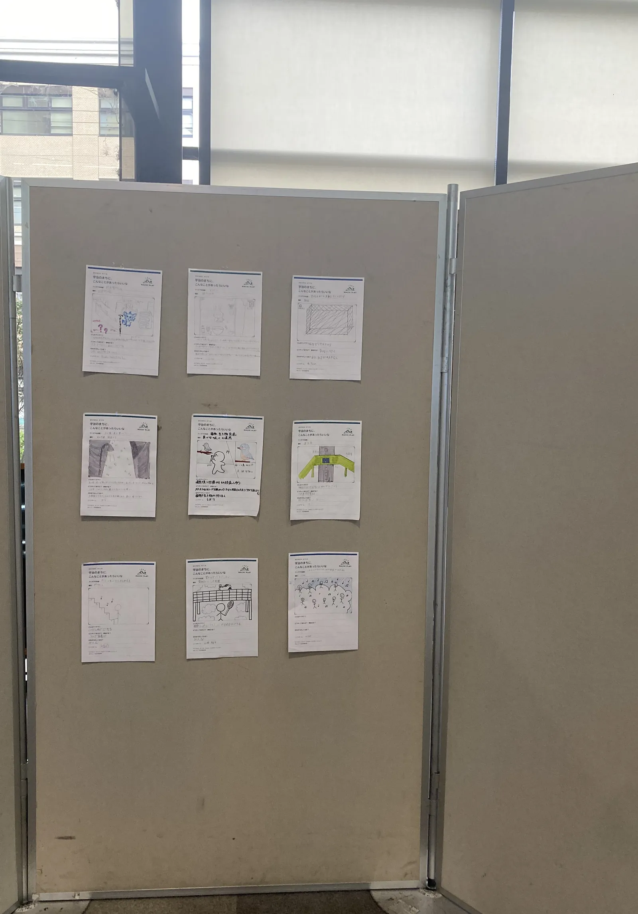
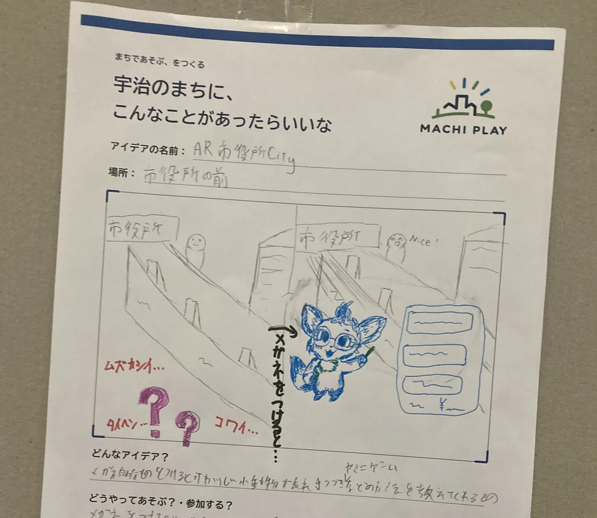
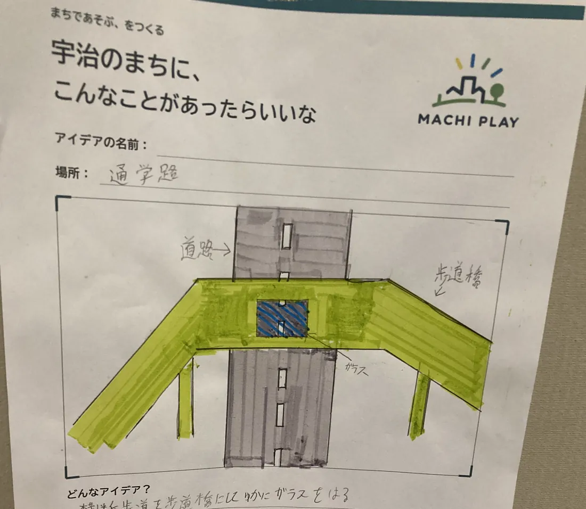
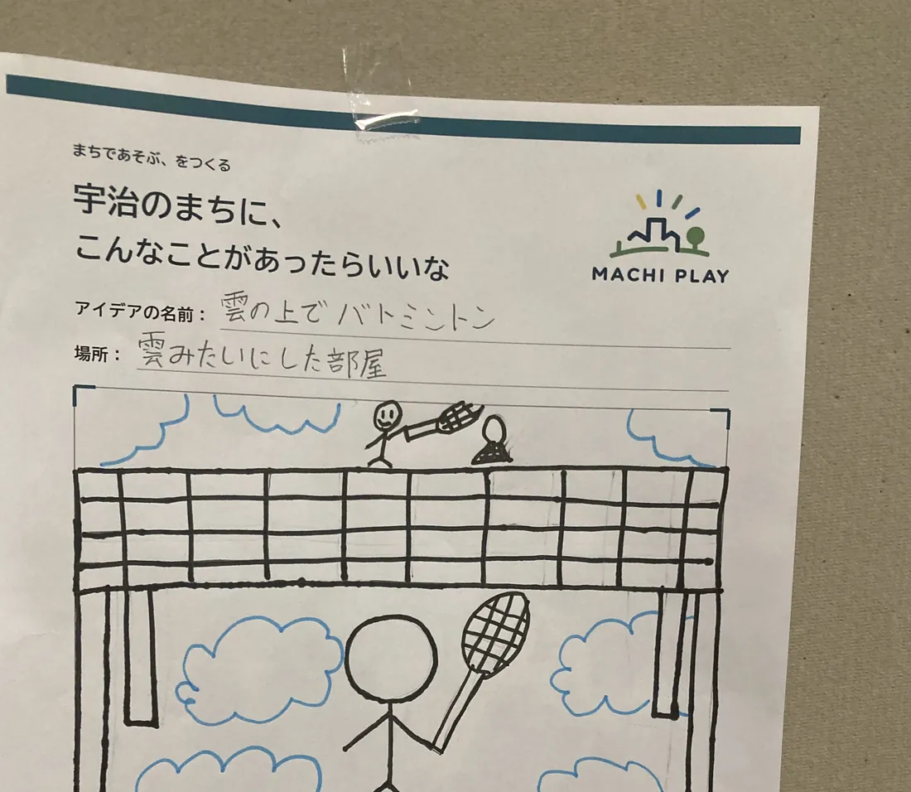
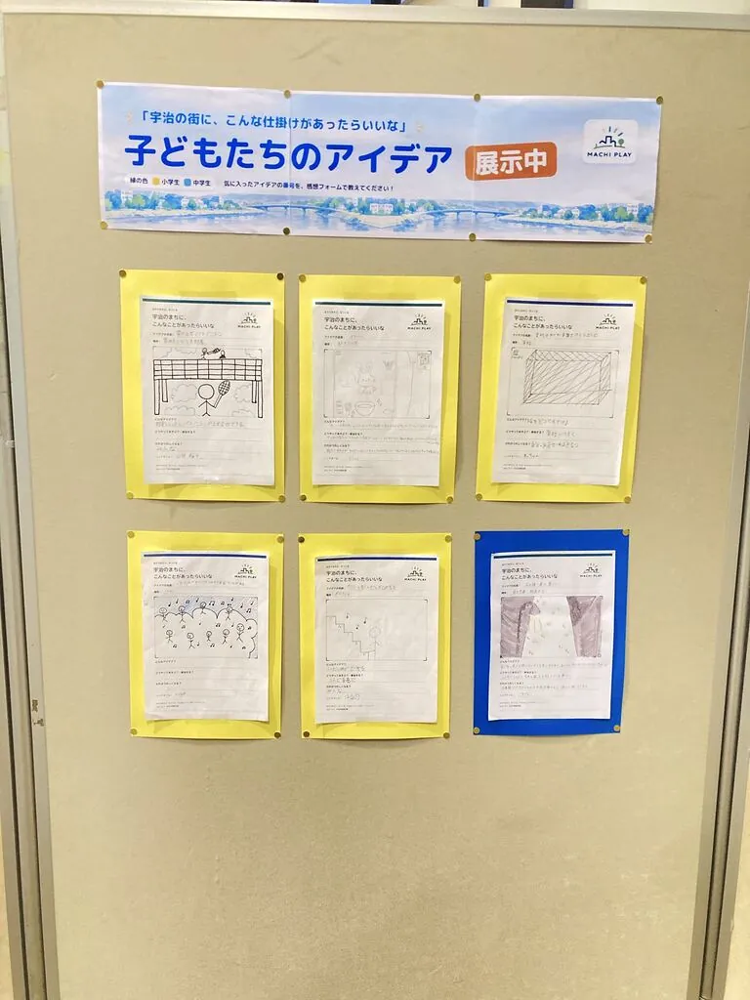

01
つくる
まちを舞台にしたゲームや、思わず誰かと関わりたくなる仕掛けを企画・開発する。

いつものまちに、新しいつながりを。
毎日歩くその道で、最後に足を止めたのはいつですか？
まちは、目的地へ向かう道のりの中にも、思いがけない出会いや発見が生まれる場所です。いつもの道で誰かと何かを一緒に楽しんだり、思いがけない出会いが生まれたり。そんな小さな出来事が、見慣れたまちを少しずつ違った場所に変えていきます。
MACHI PLAYは、「楽しい」をきっかけに、まちの中に新しいつながりを生み出す取り組みです。子どもも大人も、たまたまそこを通りかかった人も。遊びを通して人と人との間に生まれたつながりが、いつもの風景への新しい気づきや、まちへの愛着を育んでいきます。
いつもの道で誰かと出会い、見慣れたまちをもっと好きになる。そんな日常を、遊びの力でつくっていきたいと考えています。
活動を見る →ABOUT
通学路も、階段も、バス停も。毎日通り過ぎている場所に、小さな遊びをひとつ置いてみる。それだけで、ふだんは交わらない人どうしが一緒に笑い、見慣れた風景が少し違って見えてきます。そのきっかけを、まちの中につくっています。
01
まちを舞台にしたゲームや、思わず誰かと関わりたくなる仕掛けを企画・開発する。
02
子どもも大人も、通りかかった人も一緒に遊べる場をひらく。
03
生まれたアイデアとつながりを展示し、記録に残して次のまちへ渡す。
REPORT
2026年10月3日、宇治市産業会館 多目的ホール。子どもたちが考えた「宇治のまちにあったらいいな」が9枚、会場に並びました。

駅やバス停、通学路、茶畑、雲の上。身近な場所から思いもよらない場所まで、絵と短い言葉で描いてもらいました。




PROFILE
宇治市未来キャンパス受講生。いつもの道をもっと面白くしたいと思い、まちで遊べる仕掛けやゲームをつくっています。2026年10月のワークショップでは、企画・当日の運営・ゲームの開発を担当しました。
CONTACT
ワークショップの開催や取材のご相談、「うちのまちでもやってみたい」というお話も歓迎です。いただいた内容は、ご本人への返信にのみ使います。